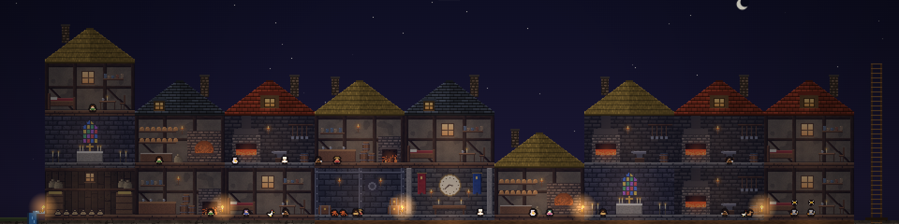
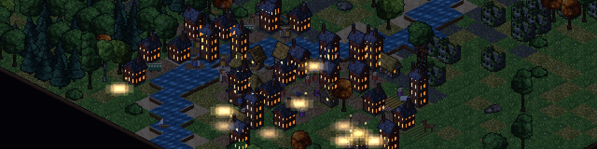
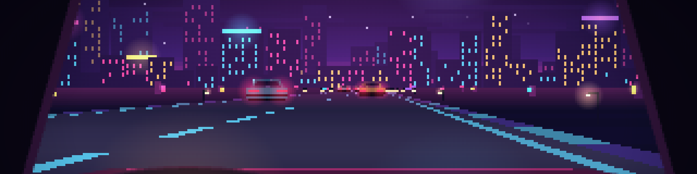

IDLE TOYS
Three small pixel-art worlds to leave running on a spare screen. They live on their own, play music made live, and let you steer, never control. Free, in your browser, and they work offline.

DUNGEON TOWN
A town on the surface, a dungeon beneath it. The townsfolk want the gold, the monsters want the food, and neither side ever wins.

WHISPER CIVILIZATION
A new people rises on the ruins of a real city and grows through its own ages. You can only whisper: they may listen, or not.

NIGHT COURIER
A messenger's car drives itself between real cities in real time, through the real light of the hour, with the radio on.